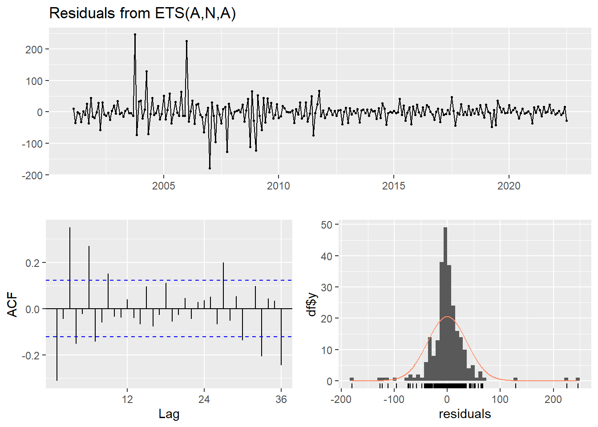

Code
library(dynlm)
library(forecast)
library(readxl)
library(stargazer)
library(scales)
library(xts)
library(urca)
library(tidyverse)
library(tsibble)
library(fpp2)
library(fpp3)
library(ggthemes)
library(lubridate)This analysis has an objective to forecast revenue collection for the next 12 month from the last available data in 2021. Based on monthly Pakistan Tax Collection data, these time series cumulate from 2001 to the latest 2023 available data. __ This is still under development and in detail video on how to make this analysis and creating a file like this one will be uploade on Data analysis and econometric
Main purpose of this analysis is to develop a tutorial for students who use time series modeling for forecasting. However, FBR officials can also use this analysis for forecasting and develop scenario for themselves. Our time series is a conventional univariate time series with date and monthly tax variables which we will list in the following chunk. The step applied in this analysis can be used in any forecast analysis.
This analysis is statistical forecasting (not economic forecasting) based on three classic forecasting models(Seasonal naïve, Exponential smoothing, ARIMA) and experienced one neural network model Seasonal naïve model.
I will start from very basics and will increase complexity gradually. Let me explain each model briefly.
As it will be observed in the following graphs that data have strong seasonality. Therefore, the first more basics models applied is the Seasonal Naive model. The seasonal naive model makes the forecast using the last value from the same season, for example, the year before to forecast the value for the next year.
The second model applied is the exponentials state smoothing method by using ETS model who refer to error, trend and seasonality. This model can perform better in a short-term and on a univariate time series forecast. The model uses the exponentially weighted moving average (EWMA) to “smooth” a time series and trying to eliminate the random effect. The model uses a smoothing constant (a) which is transformed into a damping factor (1-a), the constant (a) define the weight which is applied to each period. ETS model can be applied as additive or multiplicative, but R selects the most optimal.
The third model applied is the autoregressive integrated moving average (ARIMA). ARIMA models are more complex model than the two previous models mainly because of the algorithm which backed this forecast model in R. ARIMA is the combination of two models. First, autoregressive model AR(p), which forecast the variable of interest using a linear combination of past values of the variable, where (p) is the lag number. Second, moving average models MA(q), which is applied as a linear regression of the current value of the series against current and previous white noise error terms or random shocks.
The fourth model applied, are neural network models (NN), which is the most complex model used in this analysis. This NN model performs in nonlinear time series and with big data sets. Because there seems nonlinearity in our data, we decided to test the predictive capacity of this model. The NN model is organised in multiples layers, the simplest networks contain no hidden layers and are equivalent to linear regressions. The coefficients attached to these predictors are called “weights”. The forecasts are obtained by a linear combination of the inputs. The weights are selected in the neural network framework by using a “learning algorithm”.
First we upload data from the relevant working directory. How R and R Studio can be installed and data can be uploaded, watch R &R Studio and Data upload
Install R packages, load the data and declare this data series as a time series. Preliminary data observations
Data decomposition: Stationarity and identify lag specification, Seasonal component, Cycle component, Trend component.
Finding the most accurate model 4.1. Seasonal Naive method 4.2. ETS method, exponential smouthing models 4.3. ARIMA model 4.4. Neural network model Make the forecast for the next 12 months. Conclusion Create a report with Markdown
Some of these packages are not required for this analysis.
library(dynlm)
library(forecast)
library(readxl)
library(stargazer)
library(scales)
library(xts)
library(urca)
library(tidyverse)
library(tsibble)
library(fpp2)
library(fpp3)
library(ggthemes)
library(lubridate)This data is about monthly tax collection in billion of rupees (data source FBR).I have uploaded data from the respective directory.
library(readxl)
tax_data <- read_excel("data/tax_billion_rs.xlsx") #Source FBR
tax_data# A tibble: 259 × 7
Date tax direct indirect sales excise custom
<dttm> <dbl> <dbl> <dbl> <dbl> <dbl> <dbl>
1 2001-12-01 00:00:00 39 20.6 18.3 13.6 3.3 1.4
2 2002-01-01 00:00:00 32.8 13.4 19.4 12.6 3.4 3.4
3 2002-02-01 00:00:00 27.6 7.5 20.1 13.2 3.7 3.2
4 2002-03-01 00:00:00 34.9 12.5 22.4 14.1 3.9 4.4
5 2002-04-01 00:00:00 36.3 12.3 24 15.1 4.7 4.2
6 2002-05-01 00:00:00 37.4 10.3 27.1 16.9 4.9 5.3
7 2002-06-01 00:00:00 60.3 23.8 36.5 20.9 6.1 9.5
8 2002-07-01 00:00:00 23.6 4.8 18.8 12.3 2.6 3.9
9 2002-08-01 00:00:00 29.6 7 22.6 14.5 3.5 4.6
10 2002-09-01 00:00:00 37.2 11.8 25.4 16.9 3.6 4.9
# ℹ 249 more rowstaxes<-tax_data %>%
mutate(year = lubridate::year(Date),
month = lubridate::month(Date),
day = lubridate::day(Date))
taxes# A tibble: 259 × 10
Date tax direct indirect sales excise custom year month
<dttm> <dbl> <dbl> <dbl> <dbl> <dbl> <dbl> <dbl> <dbl>
1 2001-12-01 00:00:00 39 20.6 18.3 13.6 3.3 1.4 2001 12
2 2002-01-01 00:00:00 32.8 13.4 19.4 12.6 3.4 3.4 2002 1
3 2002-02-01 00:00:00 27.6 7.5 20.1 13.2 3.7 3.2 2002 2
4 2002-03-01 00:00:00 34.9 12.5 22.4 14.1 3.9 4.4 2002 3
5 2002-04-01 00:00:00 36.3 12.3 24 15.1 4.7 4.2 2002 4
6 2002-05-01 00:00:00 37.4 10.3 27.1 16.9 4.9 5.3 2002 5
7 2002-06-01 00:00:00 60.3 23.8 36.5 20.9 6.1 9.5 2002 6
8 2002-07-01 00:00:00 23.6 4.8 18.8 12.3 2.6 3.9 2002 7
9 2002-08-01 00:00:00 29.6 7 22.6 14.5 3.5 4.6 2002 8
10 2002-09-01 00:00:00 37.2 11.8 25.4 16.9 3.6 4.9 2002 9
# ℹ 249 more rows
# ℹ 1 more variable: day <int>##yearly data
tax_year<-taxes %>% group_by(year) %>%
summarise(tax_yr=sum(tax),dir_yr=sum(direct),indir_yr=sum(indirect),sales_yr=sum(sales),excise_yr=sum(excise), custom_yr=sum(custom))
tax_year# A tibble: 23 × 7
year tax_yr dir_yr indir_yr sales_yr excise_yr custom_yr
<dbl> <dbl> <dbl> <dbl> <dbl> <dbl> <dbl>
1 2001 39 20.6 18.3 13.6 3.3 1.4
2 2002 431. 142. 289. 185 46.6 57.7
3 2003 490. 160 330. 203. 44.7 81.8
4 2004 551 174. 377. 228. 48.6 101.
5 2005 652. 209. 444. 263. 54.6 126.
6 2006 799. 292. 508. 307. 63.6 137.
7 2007 871 325. 546. 332. 80.3 133.
8 2008 1120 429. 691. 424. 105. 162.
9 2009 1185. 441. 744. 478 127. 139.
10 2010 1414 561. 854. 560. 122. 171.
# ℹ 13 more rowsWe have used “The Economist Themse”, one may use one’s own choice like Financil Times, Fivethirtyeight.com etc.
ggplot(tax_data)+aes(x=Date, y=tax)+geom_line()+
ylab("Rs. in Billion") +
ggtitle("Monthly tax collection year wise in billion of Rs. by FBR")+ labs(caption=" Source :FBR")+theme_economist()## Plot total taxes with The Economist themeThere are total taxes, direct and indirect taxes, and subcomponents of indirect taxes- sales tax, custom and excise duties. Now we plot direct and indirect taxes. How t
ggplot(tax_data, aes(x=Date)) +
geom_line(aes(y = direct), color = "darkred") +
geom_line(aes(y = indirect), color="steelblue", linetype="twodash")+
scale_color_manual(values = c("darkblue", "darkred", "steelblue")) +ylab("Rs. in Billion") +
ggtitle("Monthly tax collection year wise in billion of Rs. by FBR")+ labs(caption=" Source :FBR")+theme_economist()#Method 1Warning: Removed 12 rows containing missing values or values outside the scale range
(`geom_line()`).
df <- tax_data %>%
select(Date, tax, direct, indirect) %>%
gather(key = "variable", value = "value", -Date)
df# A tibble: 777 × 3
Date variable value
<dttm> <chr> <dbl>
1 2001-12-01 00:00:00 tax 39
2 2002-01-01 00:00:00 tax 32.8
3 2002-02-01 00:00:00 tax 27.6
4 2002-03-01 00:00:00 tax 34.9
5 2002-04-01 00:00:00 tax 36.3
6 2002-05-01 00:00:00 tax 37.4
7 2002-06-01 00:00:00 tax 60.3
8 2002-07-01 00:00:00 tax 23.6
9 2002-08-01 00:00:00 tax 29.6
10 2002-09-01 00:00:00 tax 37.2
# ℹ 767 more rows# Visualization
ggplot(df, aes(x = Date, y = value)) +
geom_line(aes(color = variable, linetype = variable)) +
scale_color_manual(values = c("darkblue", "darkred", "steelblue")) +ylab("Rs. in Billion") +
ggtitle("Monthly tax collection year wise in billion of Rs. by FBR")+ labs(caption=" Source :FBR")+theme_economist()Warning: Removed 12 rows containing missing values or values outside the scale range
(`geom_line()`).
We observe a strong positive trend and seasonality. Trend over time seems bit nonlinear. Even though, in this first observation, we can intuitively conclude that these time series have no stationary. In the next section, we will investigate and identify those potential problems in the way to make some correction to this time series and for selecting the most appropriate forecasting model.
A time series is stationary if it’s characteristics like mean, variance, covariance, are time variant: that is, they do not change over the time. Non-stationarity may cause autocorrelation which we explained in the next step.
We will make the Dickey-Fuller Test to check the stationarity in the data.
library(tseries)
adf.test(tax_data$direct, alternative = "stationary", k=12) Warning in adf.test(tax_data$direct, alternative = "stationary", k = 12):
p-value greater than printed p-value
Augmented Dickey-Fuller Test
data: tax_data$direct
Dickey-Fuller = 4.5963, Lag order = 12, p-value = 0.99
alternative hypothesis: stationaryNull hypothesis of non-stationarity is not rejected. This test confirmed that this series is not stationary.
To correct the non-stationarity problem, we apply the first difference and make the Dickey-Fuller again.
DS <- diff(tax_data$direct)
adf.test(DS, alternative = "stationary", k=12)
Augmented Dickey-Fuller Test
data: DS
Dickey-Fuller = -3.6786, Lag order = 12, p-value = 0.02607
alternative hypothesis: stationaryThe Dickey-Fuller test allows you to reject the null hypothesis with this small p-value and we can conclude this series is stationary. By taking the first difference, we are making the making the corrections on this initial non-stationary time series.
We can visualize the data, for seeing the impact of the first difference on this time series.
DS<-tax_data %>% mutate(mom_pct=(direct/lag(direct)-1)*100)
ggplot(DS)+aes(x=Date,y=mom_pct)+geom_line()+ggtitle("Month on month basis changes in tax collection")Warning: Removed 1 row containing missing values or values outside the scale range
(`geom_line()`).We will take the first difference from the data to remove the trend. With this first difference, we can work with this time series without having the trend influence forecasting .
Also, It’s important because it helps to identify the driving factors. When we detect a change in a time series, we may be able to infer a correlation. But we need both time series to be stationary (no trend and no seasonality); otherwise, the correlation we find will be misleading.
There are three main problems with stochastic trends: 1. AR coefficients can be badly biased towards zero. This means that if you estimate an AR and make forecasts, if there is a unit root then your forecasts can be poor (AR coefficients biased towards zero)
2. Some t-statistics don’t have a standard normal distribution, even in large samples (more on this later)
3. If Y and X both have random walk trends then they can look related even if they are not – you can get “spurious regressions.”Autocorrelation means that there are correlations in the error or lag correlations of a given series with itself, lagged by a number of time units. Which signify:
\[Y_c =x + \beta X_i+u_i\]
\[Cov(u_i, u_s) \neq 0 \forall i\neq s\] Autocorrelation measures the linear relationship between lagged values of a time series. We will see dependence in the data across a range of lag value.
acf(tax_data$direct)acf plot shows that the data are strongly non-random and autorgressive model maybe appropriate. We can check the autocorrelation by plotting residual and standardized residuals of regression against time and compare if they show a similar pattern which signs for autocorrelation.
Seasonality is a pattern which occurs when a time series is observed at less than annual frequency and is affected by seasonal factors such as the time of the year or the day of the week. We know that tax collection authorities usually have to meet quarterly target and some accounting lags also make collection a seasonal phenomena. We need to detect seasonality in a time series in the way to make the necessary adjustment or for choosing the appropriate models. Seasonality adjustment has three main reasons: 1. to aid in short-term forecasting
2. to help in relating time series to other series or extreme events 3. to allow series to be compared from year to year or month to month or the day today.
Following two visualizations will help to identify the seasonality.
ts_tax<-ts(DS$mom_pct, frequency = 12,start = c(2001,1))
decomp<-decompose(ts_tax)
plot(decomp)library(ggthemes)
ggseasonplot(ts_tax,year.labels=TRUE, year.labels.left=TRUE) +
ylab("Rs. in Billion") +
ggtitle("Monthly tax collection year wise in billion of Rs. by FBR")+ labs(caption=" Source :FBR")+theme_economist()Warning: Removed 1 row containing missing values or values outside the scale range
(`geom_line()`).Warning: Removed 1 row containing missing values or values outside the scale range
(`geom_text()`).We can observe that those 19 multiples colour lines, already have the same pattern over the years. Those colour lines informed you of the possible presence of seasonal cycles in this time series.
Now, look at this other seasonal plot which isolates the variation for one month at the time
ggsubseriesplot(ts_tax)Warning: Removed 1 row containing missing values or values outside the scale range
(`geom_line()`).Warning: Removed 22 rows containing missing values or values outside the scale range
(`geom_line()`).The horizontal lines indicate the means for each month. This form of plot enables the underlying seasonal pattern to be seen clearly, and also shows the changes in seasonality over time. It is especially useful in identifying changes within particular seasons.
Both line and seasonal plots indicate that there seems strong trend and seasonality pattern in tax data.
In this section we are going to fit a model on tax data and will find out the most appropriate model. ## 4.1 seasonal naïve method as our benchmark
This model is used as a benchmark and performance of any technical model is compared with this model. This model using the most recent observation as a forecast. We are using seasonal naive model because data seems seasonal.
\[\hat{y}_{T+h|T}=y_{T+h-m(k+1)}\]
fit_SN <- snaive(ts_tax)
forecast::snaive((ts_tax), h = 24) Point Forecast Lo 80 Hi 80 Lo 95 Hi 95
Aug 2022 -54.564050 -105.741349 -3.386751 -132.832975 23.70487
Sep 2022 -6.865504 -58.042803 44.311795 -85.134428 71.40342
Oct 2022 105.135952 53.958653 156.313251 26.867027 183.40488
Nov 2022 -40.176730 -91.354029 11.000568 -118.445655 38.09219
Dec 2022 6.499261 -44.678037 57.676560 -71.769663 84.76819
Jan 2023 95.839112 44.661813 147.016411 17.570188 174.10804
Feb 2023 -48.087819 -99.265118 3.089480 -126.356743 30.18111
Mar 2023 -3.683492 -54.860791 47.493806 -81.952417 74.58543
Apr 2023 65.958451 14.781152 117.135750 -12.310473 144.22738
May 2023 -41.394026 -92.571325 9.783273 -119.662950 36.87490
Jun 2023 12.427184 -38.750114 63.604483 -65.841740 90.69611
Jul 2023 125.949914 74.772615 177.127213 47.680989 204.21884
Aug 2023 -54.564050 -126.939680 17.811580 -165.253025 56.12492
Sep 2023 -6.865504 -79.241134 65.510127 -117.554478 103.82347
Oct 2023 105.135952 32.760321 177.511582 -5.553023 215.82493
Nov 2023 -40.176730 -112.552361 32.198900 -150.865705 70.51224
Dec 2023 6.499261 -65.876369 78.874892 -104.189713 117.18824
Jan 2024 95.839112 23.463482 168.214743 -14.849862 206.52809
Feb 2024 -48.087819 -120.463449 24.287812 -158.776793 62.60116
Mar 2024 -3.683492 -76.059123 68.692138 -114.372467 107.00548
Apr 2024 65.958451 -6.417179 138.334082 -44.730523 176.64743
May 2024 -41.394026 -113.769656 30.981605 -152.083000 69.29495
Jun 2024 12.427184 -59.948446 84.802815 -98.261790 123.11616
Jul 2024 125.949914 53.574283 198.325544 15.260939 236.63889checkresiduals(fit_SN)
Ljung-Box test
data: Residuals from Seasonal naive method
Q* = 91.108, df = 24, p-value = 9.441e-10
Model df: 0. Total lags used: 24We have Residual sd: 42.8065 from summary(fit_SN) command. The acf graph of residuals indicate autocorrelation among the residuals. Ljung Box statistics is also very high and it reject the null hypothesis that residuals are uncorrelated.
The naive and Snaive model are fundamental models. Some business uses those model basic forecasting models, maybe because of the lack of internal resources. Producing or maintaining extra stock it is a cost for the company and creates inefficiency. We continue testing the forecast performance of others models.
Second, we will apply ETS model: Error, Trend, Seasonal. The flexibility of the ETS model lies in its ability to trend and seasonal components of different traits. This function ets() automatically optimizes the choice of model and necessary parameters. We present the structure of the additive and the multiplicative form.
Assuming: \[\mu_t = \hat{y}_t=l_{t-1}+ b_{t-1}\] and \[\varepsilon_t = y_{t} - \mu_{t}\]
ETS additive
\[y_t = l_{t-1} + \phi b_{t-1} + \varepsilon_t\]
\[l_t = l_{t-1} + \phi b_{t-1} + \alpha\varepsilon_t\]
\[b_t = \phi b_{t-1} + \beta^*(l_{t}-l_{t-1}- \phi b_{t-1} = \phi b_{t-1}+\alpha\beta^*\varepsilon_t\]
\[\varepsilon_t = (y_t-\mu_t ) / \mu_t\]
\[y_t = (l_{t-1} + \phi b_{t-1}) (1+\varepsilon_t)\]
\[l_t = (l_{t-1} + \phi b_{t-1}) (1+\alpha\varepsilon_t)\]
\[b_t = \phi b_{t-1}+\beta(l_{t-1} + \phi b_{t-1})\varepsilon_t\]
fit_ets <- ets(ts_tax) #residual = 221.1631Warning in ets(ts_tax): Missing values encountered. Using longest contiguous
portion of time seriescheckresiduals(fit_ets)
Ljung-Box test
data: Residuals from ETS(A,N,A)
Q* = 109.77, df = 24, p-value = 6.183e-13
Model df: 0. Total lags used: 24We have a residual sd =40.49 from summary(fit_ets) command, which are more accurate than the seasonal naïve models and what mean for the exact month the years before, which missing on average 40.49 billion.
So this model increases the precision and offer a better fit but: if we look to AFC graph, we observe that there remains autocorrelation because of the bar going out of the 95% confidence line.
The Ljung-Box test Test results also indicate rejection of null hypothesis that residuals are non-correlated.
We realize that with using just a bit more complex forecasting model, we increase accuracy and can make a significant improvement in tax collection. We continue our analysis with a one of the most performant forecasting model the ARIMA.
ARIMA model is a Generalized random walk model which is fine-tuned to eliminate all residual autocorrelation. It is a Generalized exponential smoothing model that can incorporate long-term trends and seasonality.
AR(p) model \[(1-\sum^p_{k=1}\alpha_kL^k)X_t = \varepsilon_t\] MA(q) model \(X_t = (1+\sum^q_{k=1}\beta_kL^k)\varepsilon_t\) First difference is \(\Delta X_t=X_t -X_{t-1} = (1-L)X_t\) where \(\ Y_t = (1-L)X_t\)
ARIMA(p, d, q) full model \[(1-\sum^p_{k=1}\alpha_kL^k)(1-L)^dX_t = (1+\sum^q_{k=1}\beta_kL^k)\varepsilon_t\]
ARIMAX model
\[\Delta y_t=\alpha_0+\sum_{j}\alpha_j \Delta y_{t-j}+\sum_h\gamma_h\epsilon_{t-h}+X\beta+\epsilon_t\]
#fit_ARIMA <- auto.arima(ts_tax, d=1,D=1, stepwise = FALSE, approximation = FALSE)
#checkresiduals(fit_ARIMA)We have a residual standard error (residual) = sqrt(1251), what mean for the exact month the years before, which missing on average 35 billion.
At this stage, we can conclude that the ARIMA model offers the best fit base on residual and standard deviations.
The Ljung-Box test Test results also indicate that model is appropriate fit as null hypothesis of non-autocorrelation among residuals is rejected. So far ARIMA model not only passes the diagnostic testing but also performs better than the seasonal naive and ETS models.
Though for economic theory or behavioral models, simpler the better. But for forecasting having capacity for applying and Understanding complex models is a plus value for any business or forecasting team. Many decisions are based on the capacity to forecast revenues. Accuracy in short-term revenue forecast has the critical impact on all economic planning. Accuracy on long-term forecasting, contribute for supporting the significant fiscal decision. In the end, short-term and long-term forecast accuracy will have a significant impact to optimize the growth of the economy. Lousy forecasting can reduce FBR capacity for effecient decision making.
This model allows complex nonlinear relationships between the response variable and its predictors. Our time series are mostly linear, and in this case, the neural network may not be the most appropriate model, but we will compare performance against seasonal naive, ETS and ARIMA.
In neural network the inputs of each node are combined using a weighted linear combination. For exemple, the inputs (for 4 inputs) into hidden neuron j are combined linearly to give \[z_j = b_j+\sum_{i=1}^4 w_i,_jx_i\] and in the hidden layer,this is then modified using a nonlinear function such as a sigmoid, \[s(z) = \frac{1}{1=e^-z}\]
NNL <- nnetar(ts_tax)Warning in nnetar(ts_tax): Missing values in x, omitting rowsNN <- nnetar(ts_tax, lambda="auto")Warning in nnetar(ts_tax, lambda = "auto"): Missing values in x, omitting rowsWarning in guerrero(x, lower, upper): Guerrero's method for selecting a Box-Cox
parameter (lambda) is given for strictly positive data.checkresiduals(NNL)
Ljung-Box test
data: Residuals from NNAR(7,1,4)[12]
Q* = 38.925, df = 24, p-value = 0.02781
Model df: 0. Total lags used: 24accuracy(NN) ME RMSE MAE MPE MAPE MASE ACF1
Training set 3.232108 29.65609 17.2437 -Inf Inf 0.7569665 -0.1551509There seems some spikes going out of usual range in acf plot of residuals which may indicate little problem of residuals autocorrelation. This is very complex model but often very useful for deep learning.
We will compare those forecast models performances with using two strategies.
First strategy: We will compare the indicators produced by the output of the accuracy() function when all the time series is the training set.
Second strategy: Like the first strategy, we will compare the indexes produce by the output of the accuracy() function but we will split the dataset by creating, one training set and one test set.
It is important to use the right tool for an accurate analysis and for understanding the impact on the results when a different strategy is used.
We will base ours performance comparison model analysis on those indexes which will we define it before we use it.
Mean absolute error: MAE
\[MAE=mean(e^2_{t})\] Root mean squared error: RMSE
\[e_{t}={y}_{t}-\hat{y}_{t|N}\] \[RMSE=\sqrt{mean(e^2_{t})}\] Mean absolute percentage error: MAPE \[p_{t}=100e_{t}/y_{t}\] Mean absolute scaled error : MASE \[q_{t}= e_{t}/Q\] Where Q is a scaling statistic computed on the training data. \[p_{t}=100e_{t}/y_{t}\] Autocorrelations of error at lag1 (ACF) \[ACF=\frac{Covariance(x_{t},x_{t-h})}{Variance(x_{t})}\] If we print summary of each model and compare accuracy, we observe that ARIMA model seems the best while NN model seems the second best. Therefore, now we forecast with NN and ARIMA models for 24 time periods ahead.
knitr::opts_chunk$set(echo = TRUE)
NN <- nnetar(ts_tax, lambda="auto")Warning in nnetar(ts_tax, lambda = "auto"): Missing values in x, omitting rowsWarning in guerrero(x, lower, upper): Guerrero's method for selecting a Box-Cox
parameter (lambda) is given for strictly positive data.fcast2 <- forecast(NN, h=24, PI=TRUE, npaths=100)
autoplot(fcast2, include = 60)print(summary(fcast2))
Forecast method: NNAR(7,1,4)[12]
Model Information:
Average of 20 networks, each of which is
a 8-4-1 network with 41 weights
options were - linear output units
Error measures:
ME RMSE MAE MPE MAPE MASE ACF1
Training set 3.172612 29.04213 16.50659 -Inf Inf 0.7246087 -0.1691944
Forecasts:
Point Forecast Lo 80 Hi 80 Lo 95 Hi 95
Aug 2022 -57.0162492 -129.340584 -16.4199812 -173.165358 -8.6076734
Sep 2022 -5.0569270 -33.598115 0.1269145 -40.637191 2.4929938
Oct 2022 110.9904182 55.549743 254.0842102 28.186525 344.2788225
Nov 2022 -49.3363350 -124.497149 -7.0323345 -163.598106 -2.7819583
Dec 2022 2.9664785 -1.237891 21.2832329 -7.601336 45.9774295
Jan 2023 115.2380153 30.621126 216.9401853 15.255178 339.6053297
Feb 2023 -54.5256385 -139.774906 -6.3286513 -179.470945 -0.4219830
Mar 2023 -0.8817934 -18.246606 4.3091995 -44.603372 17.7250642
Apr 2023 107.5151943 42.672651 224.2920343 20.453811 344.0185531
May 2023 -52.6652237 -128.069432 -8.1295824 -213.213106 -0.4152689
Jun 2023 5.6558963 -2.675507 28.6257234 -9.840845 88.9497128
Jul 2023 128.9650077 40.934497 259.4543244 20.904203 348.9581072
Aug 2023 -55.4426865 -129.702773 -9.4962812 -194.852956 -0.9353688
Sep 2023 -1.0441404 -12.290788 5.3900665 -46.016601 33.7157698
Oct 2023 120.1083118 37.161599 267.3100236 19.018640 367.3109476
Nov 2023 -52.4102549 -118.101084 -10.4902103 -215.694673 -3.3223630
Dec 2023 2.3826175 -4.995291 32.3304827 -46.477289 85.5045450
Jan 2024 126.6805237 25.049877 216.9555981 6.347758 350.1794066
Feb 2024 -55.0705574 -112.115849 -11.0718864 -215.975684 0.2350230
Mar 2024 -0.0699956 -9.965268 15.5497890 -31.722377 43.7475455
Apr 2024 125.0857231 43.456364 224.8743423 25.573518 301.2783015
May 2024 -55.9240038 -134.106723 -6.5955511 -215.215149 -1.6994811
Jun 2024 3.2704835 -4.041158 29.1669814 -16.492600 96.7803865
Jul 2024 134.1429907 40.686666 257.6946787 1.878303 332.7030377#fit_ARIMA %>% forecast(h=24) %>% autoplot()
#auto.arima(tax_data$direct) %>% forecast(h=24) %>% autoplottax_year1<-tax_year %>% filter(year!="2001"& year!="2020")
tax_year1# A tibble: 21 × 7
year tax_yr dir_yr indir_yr sales_yr excise_yr custom_yr
<dbl> <dbl> <dbl> <dbl> <dbl> <dbl> <dbl>
1 2002 431. 142. 289. 185 46.6 57.7
2 2003 490. 160 330. 203. 44.7 81.8
3 2004 551 174. 377. 228. 48.6 101.
4 2005 652. 209. 444. 263. 54.6 126.
5 2006 799. 292. 508. 307. 63.6 137.
6 2007 871 325. 546. 332. 80.3 133.
7 2008 1120 429. 691. 424. 105. 162.
8 2009 1185. 441. 744. 478 127. 139.
9 2010 1414 561. 854. 560. 122. 171.
10 2011 1737 674. 1063. 732. 133. 199.
# ℹ 11 more rowsggplot(tax_year1)+aes(x=year)+geom_line(aes(y = dir_yr), color = "darkred") +
geom_line(aes(y = indir_yr), color="steelblue", linetype="twodash")+
scale_color_manual(values = c("darkblue", "darkred", "steelblue")) +ylab("Rs. in Billion") +
ggtitle("Indirect (dashed) and direct taxes (solid line) in billion of Rs. by FBR")+ labs(caption=" Source :FBR")+theme_economist()Warning: Removed 2 rows containing missing values or values outside the scale range
(`geom_line()`).indirect_direct<-tax_year %>% mutate(ind_dir=(indir_yr/dir_yr)) %>% filter(year!=2001)
ggplot(indirect_direct)+aes(x=year,y=ind_dir)+geom_line()+
ggtitle("Ratio of indirect to direct taxes year wise in billion of Rs. by FBR")+ labs(caption=" Source :FBR")+theme_economist()Warning: Removed 2 rows containing missing values or values outside the scale range
(`geom_line()`).